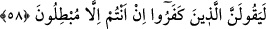

(kıyâmete yakın) yüz yıllar gelecek ki onun üzerinde bir tane muvahhid olmayacak. İşte
Allah dünyânın yok olmasını istediğinde o zaman ehl-i îman kaybolacak. Sonra devr-i
sünbüle sona erecek ve zuhûr butûna intikal edecek. Berzah müddeti tamam olduktan
sonra sûra üfürülecek. Ehl-i îman öldükleri gibi tevhid üzere diriltilecek. Ehl-i küfür
ise helâk edildikleri Allâh’a ortak koşma üzere diriltilecek. Dünyâ, dünyânın müddeti,
ihtivâ ettiği işler ve haller unutulup gidecek.
Ne mutlu dünyânın gündüzü boyunca oruç tutup da kıyâmetin o uzun gününde Allâh’ın
cennet nîmetleriyle doyuracağı kimseye! Ne mutlu dünyânın gecesi boyunca ibâdet edip
de Allâh’ın sıkıntıdan rahatlatmak için arşının gölgesinde durdurduğu kimseye! Ne
mutlu Allah muhabbetinin ateşine düşüp de Allâh’ın o günün cehennem ateşinden
kurtardığı ve kendisini nur ile kuşattığı kimseye! Çünkü müttaki bir mü’minde hem
dünyâ sıkıntısı hem de âhiret sıkıntısı toplanmaz.
Şeyh Attâr (k.s.) İlâhînâme’de der ki:
Günlerden bir gün Bağdat çarşısında şiddetli bir yangın oldu.
Halktan, bir feryâd koptu. Kıyâmet koptu sanki.
Yolda, elinde sopası ihtiyar bir kadın, bir yerden geliyordu.
Birisi ona, sakın gitme. Evin yanıyordur mutlaka, dedi.
Kadın: Sus, deli sensin. Allah benim evimi yakmaz, dedi.
Sonunda anlaşıldı ki kocakarıya yangından hiçbir ziyan gelmemiş.
Ona, a kocakarı, bunu nereden bildin, söylesene dediler.
İhtiyar kadın şöyle dedi: “Ya evimi yakar, ya gönlümü yakar,
Madem deli gönlümü dertlere yaktı, elbette evimi yakmayacak.”
Şu halde akıllı kimseye düşen, Allah Teâlâ’nın kendisini cehennem ateşinden kurtarma
konusundaki murâdının gerçekleşmesi için Allâh’ın hükümlerinde ve emirlerinde O’nun
muradı üzere olmaktır. Allâh’ın rızâsını elde etmeye çalışmak ise sadece dünyâda olur.
Çünkü dünyâ mükellifiyet yurdudur. Ölüm gelip çattığı zaman ağız ve uzuvlar
mühürlenir, duyular, kuvveler ve eksikleri telâfi yolları tamamen kapanır. Herkes ameli
ile başbaşa kalır.
58. Andolsun ki biz, bu Kur’an’da insanlar için her çeşit misale yer vermişizdir.
Şâyet onlara bir mûcize getirsen inkârcılar kesinlikle şöyle diyeceklerdir: Siz
ancak bâtıl şeyler ortaya atmaktasınız.